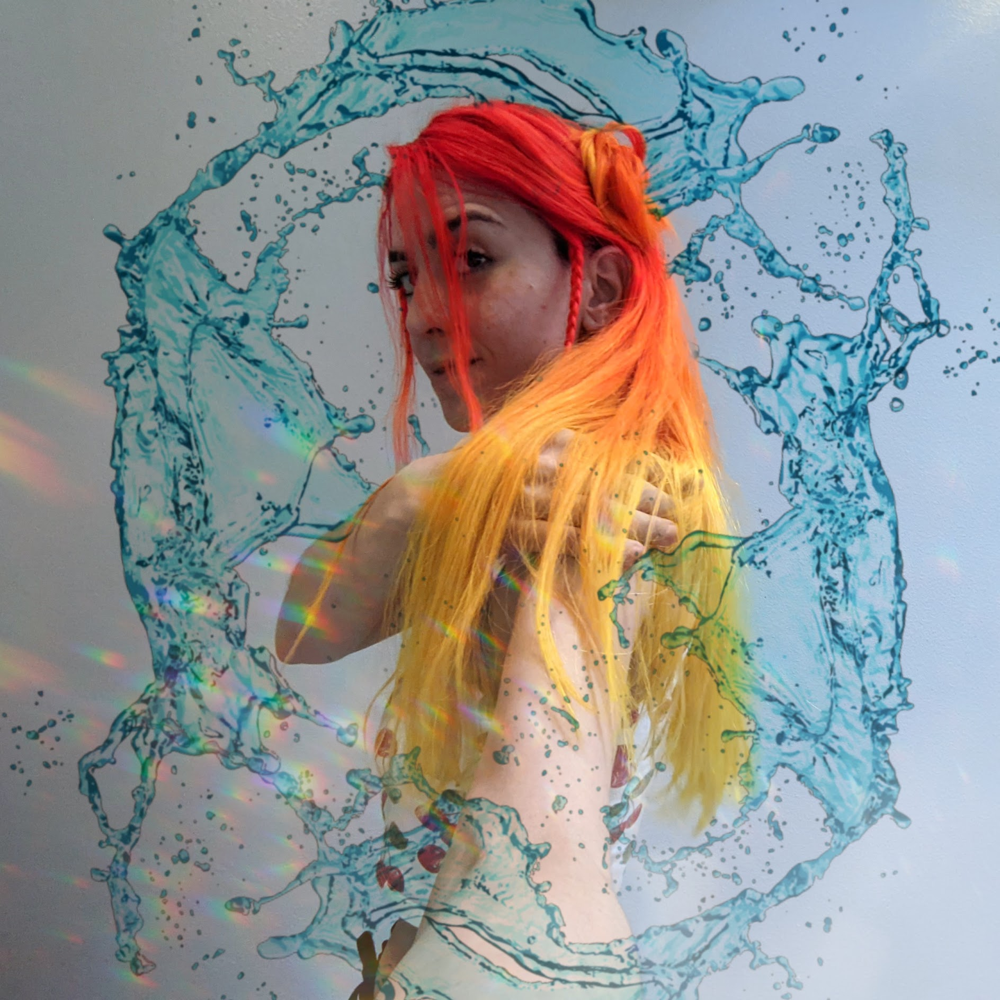

ABOUT
ABOUT ME

Hi! My name is Ivana Ramos (she/her) and I'm a student at Ada Developer's Academy in Seattle, WA (Cohort 15, 2021).
My journey into tech started during my college years, when I wrote my undergraduate dissertation on Digital & Interactive Poetry. User interaction and the gamification of learning were some of the topics I examined, which led me to pursue an MBA in Digital Marketing and get more familiar with web development in general.
Later on, as a Copyeditor/Game Tester, I had the opportunity to know a bit more about the tech industry. Having this experience encouraged me to focus on studying software development, and here I am :)
As a software engineering student, backend development has been my favorite part of the stack. I'm eager to keep learning new languages and developing my skills in programming.
As an up-and-coming software engineer, my goal is to work on innovative projects that can have a positive impact on both technology and society.
• My areas of interest include IoT and AI: Cybersecurity, Machine Learning, Natural Language Processing and working with data.
• In my free time, I enjoy playing video games, board games, and RPG. I'm also a (total) beginner flutist hoping to play Choro someday.
HOBBIES
Gaming (console, PC, board games and RPG)
Logic puzzles
Flute & folk music
Movies & TV series (Drama, Sci-fi, classics)